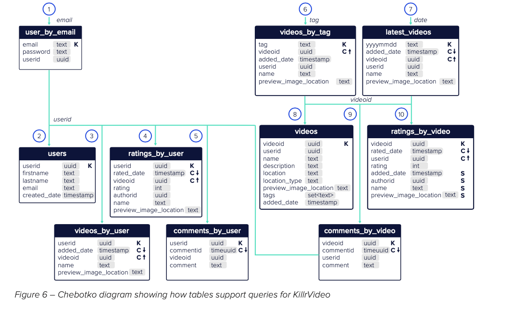

Reading from Cassandra official website: https://www.datastax.com/sites/default/files/content/whitepaper/files/2019-10/CM2019236 - Data Modeling in Apache Cassandra ™ White Paper-4.pdf
Cassandra is a exemplary implmentation of NoSQL database, and gained popularity in various web, big data, and ML applications. Recently I’ve stumbled upon a good summary of Cassandra handbook, which includes a decent introduction to its data modeling techniques, which can in term be used in other NoSQL databases.
Here are my notes and summaries:
Data Modeling Concepts
There are great many ways Cassandra and traditional RDBMS are different: Cassandra is a wide-column database, with BASE eventual consistency guarantees, has looser relationships between tables. Therefore one needs to model their data very differently than traditional RDBMS for the application to run efficiently.
Namely NoSQL has following differences:
- No Joins: tables have loose relationships with each other without database level joining.
- No Referential Integrity: RDBMS requires foreign keys to refer to primary key in another table. NoSQL doesn’t enforce this.
- Denormalization: contrary to what RDBMS normalization techniques, denormalization is first-class citizen in NoSQL. Many NoSQL databases supports aggregating fields in the same table to achieve row level atomicity.
- Query First: SQL data modeling starts with entities and relations, while NoSQL data modeling starts with application queries.
- Sorting: Sorting is an important design decision, for Cassandra and many NoSQL databases.
(?) What are the major differences between NoSQL and SQL data modeling?
Logical Data Modeling in Cassandra
A Cassandra table uses a composite key as primary key: with a partition key (K) and a cluster key ©.
- Partition key (K) decides where the row stores in the cluster.
- Clustering key © decides how the row is sorted under the same partition key.
- Primary key can be composite of multiple Partition Keys (K) and Clustering Keys ©. e.g.: ((K1, K2), (C1, C2, C3)).
Primary key is crucially important in Cassandra data modeling, as:
- Cassandra doesn’t support query filtering without partition key.
- It impacts partitioning of data across databases, and therefore potentially impacts performance.
- Sorting is a very important decision and it impacts query performance.
(?) What is Cassandra key and why is it important?
I. Build Application Workflow
Logical Data Modeling starts with overall Application workflow, known as the “query-first design.”
II. Build E-R Diagram
Entity-Relation Diagram often used for SQL data modeling, but helpful to think through the E-Rs involved in the NoSQL modeling.
Iterate between Application Query Workflow and E-R Diagram.
III. Use Chetboko Diagrams
Chetboko Diagram is a good tool to model the queries and tables required by the NoSQL application.
- It captures the schema, highlights the partition key (K) and clustering key © for each table.
- It shows the application query workflow, and how queries link the tables together.

(?) In NoSQL data modeling, what is a Chetboko Diagram and how does it help with modeling?
IV. Create Tables
Some items to consider when creating the tables:
- Design keys well. Create unique keys.
- Use data types effectively. Cassandra supports collection (set, list, map, tuple, …).
- Use user-defined data-types by creating types.
- Denormalization is normal.
- Use secondary indexes and materialized views when necessary.
References
- NoSQL Data Modeling Techniques: https://highlyscalable.wordpress.com/2012/03/01/nosql-data-modeling-techniques/
- Data Modeling in Cassandra: https://www.datastax.com/sites/default/files/content/whitepaper/files/2019-10/CM2019236 - Data Modeling in Apache Cassandra ™ White Paper-4.pdf
- Cassandra the Definitive Guide: https://www.datastax.com/resources/ebook/oreilly-cassandra-definitive-guide